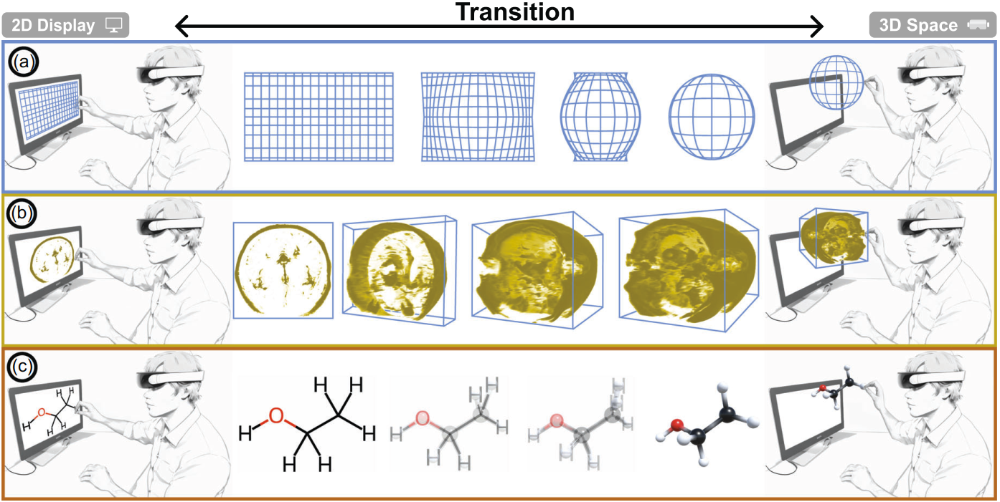

Design Considerations for Visualization Transitions of 3D Spatial Data in Hybrid AR-Desktop Environments

(opens in new tab)
Venue. CGF (2026)
Materials.
DOI(opens in new tab)
PDF(opens in new tab)
Abstract. Abstract We present design considerations for animated transitions of the appearance of 3D spatial datasets in a hybrid Augmented Reality-desktop context. Such hybrid interfaces combine both traditional and immersive displays to facilitate the exploration of 2D and 3D data representations in the environment in which they are best displayed. One key aspect is to introduce suitable transitional animations that change between the different dimensionalities to illustrate the connection between the different representations and to reduce the potential cognitive load on the user. The specific transitions to be used depend on data type, needs of the application domain, and other factors. We summarize these as design considerations to simplify the decision-making process and provide inspiration for future designs. We apply our concept to three case studies: sparse 3D point data, MRI scan data, and molecular data. Finally, we give some practical guidance for the prescriptive use of our design considerations.
Link to this page: